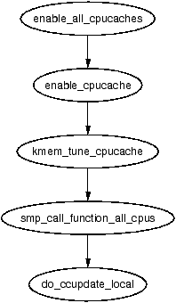

The call graph for this function is shown in 8.3. This function is responsible for the creation of a new cache and will be dealt with in chunks due to its size. The chunks roughly are;
621 kmem_cache_t *
622 kmem_cache_create (const char *name, size_t size,
623 size_t offset, unsigned long flags,
void (*ctor)(void*, kmem_cache_t *, unsigned long),
624 void (*dtor)(void*, kmem_cache_t *, unsigned long))
625 {
626 const char *func_nm = KERN_ERR "kmem_create: ";
627 size_t left_over, align, slab_size;
628 kmem_cache_t *cachep = NULL;
629
633 if ((!name) ||
634 ((strlen(name) >= CACHE_NAMELEN - 1)) ||
635 in_interrupt() ||
636 (size < BYTES_PER_WORD) ||
637 (size > (1<<MAX_OBJ_ORDER)*PAGE_SIZE) ||
638 (dtor && !ctor) ||
639 (offset < 0 || offset > size))
640 BUG();
641
Perform basic sanity checks for bad usage
642 #if DEBUG
643 if ((flags & SLAB_DEBUG_INITIAL) && !ctor) {
645 printk("%sNo con, but init state check
requested - %s\n", func_nm, name);
646 flags &= ~SLAB_DEBUG_INITIAL;
647 }
648
649 if ((flags & SLAB_POISON) && ctor) {
651 printk("%sPoisoning requested, but con given - %s\n",
func_nm, name);
652 flags &= ~SLAB_POISON;
653 }
654 #if FORCED_DEBUG
655 if ((size < (PAGE_SIZE>>3)) &&
!(flags & SLAB_MUST_HWCACHE_ALIGN))
660 flags |= SLAB_RED_ZONE;
661 if (!ctor)
662 flags |= SLAB_POISON;
663 #endif
664 #endif
670 BUG_ON(flags & ~CREATE_MASK);
This block performs debugging checks if CONFIG_SLAB_DEBUG is set
673 cachep =
(kmem_cache_t *) kmem_cache_alloc(&cache_cache,
SLAB_KERNEL);
674 if (!cachep)
675 goto opps;
676 memset(cachep, 0, sizeof(kmem_cache_t));
Allocate a kmem_cache_t from the cache_cache slab cache.
682 if (size & (BYTES_PER_WORD-1)) {
683 size += (BYTES_PER_WORD-1);
684 size &= ~(BYTES_PER_WORD-1);
685 printk("%sForcing size word alignment
- %s\n", func_nm, name);
686 }
687
688 #if DEBUG
689 if (flags & SLAB_RED_ZONE) {
694 flags &= ~SLAB_HWCACHE_ALIGN;
695 size += 2*BYTES_PER_WORD;
696 }
697 #endif
698 align = BYTES_PER_WORD;
699 if (flags & SLAB_HWCACHE_ALIGN)
700 align = L1_CACHE_BYTES;
701
703 if (size >= (PAGE_SIZE>>3))
708 flags |= CFLGS_OFF_SLAB;
709
710 if (flags & SLAB_HWCACHE_ALIGN) {
714 while (size < align/2)
715 align /= 2;
716 size = (size+align-1)&(~(align-1));
717 }
Align the object size to some word-sized boundary.
724 do {
725 unsigned int break_flag = 0;
726 cal_wastage:
727 kmem_cache_estimate(cachep->gfporder,
size, flags,
728 &left_over,
&cachep->num);
729 if (break_flag)
730 break;
731 if (cachep->gfporder >= MAX_GFP_ORDER)
732 break;
733 if (!cachep->num)
734 goto next;
735 if (flags & CFLGS_OFF_SLAB &&
cachep->num > offslab_limit) {
737 cachep->gfporder--;
738 break_flag++;
739 goto cal_wastage;
740 }
741
746 if (cachep->gfporder >= slab_break_gfp_order)
747 break;
748
749 if ((left_over*8) <= (PAGE_SIZE<<cachep->gfporder))
750 break;
751 next:
752 cachep->gfporder++;
753 } while (1);
754
755 if (!cachep->num) {
756 printk("kmem_cache_create: couldn't
create cache %s.\n", name);
757 kmem_cache_free(&cache_cache, cachep);
758 cachep = NULL;
759 goto opps;
760 }
Calculate how many objects will fit on a slab and adjust the slab size as necessary
761 slab_size = L1_CACHE_ALIGN(
cachep->num*sizeof(kmem_bufctl_t) +
sizeof(slab_t));
762
767 if (flags & CFLGS_OFF_SLAB && left_over >= slab_size) {
768 flags &= ~CFLGS_OFF_SLAB;
769 left_over -= slab_size;
770 }
Align the slab size to the hardware cache
773 offset += (align-1); 774 offset &= ~(align-1); 775 if (!offset) 776 offset = L1_CACHE_BYTES; 777 cachep->colour_off = offset; 778 cachep->colour = left_over/offset;
Calculate colour offsets.
781 if (!cachep->gfporder && !(flags & CFLGS_OFF_SLAB))
782 flags |= CFLGS_OPTIMIZE;
783
784 cachep->flags = flags;
785 cachep->gfpflags = 0;
786 if (flags & SLAB_CACHE_DMA)
787 cachep->gfpflags |= GFP_DMA;
788 spin_lock_init(&cachep->spinlock);
789 cachep->objsize = size;
790 INIT_LIST_HEAD(&cachep->slabs_full);
791 INIT_LIST_HEAD(&cachep->slabs_partial);
792 INIT_LIST_HEAD(&cachep->slabs_free);
793
794 if (flags & CFLGS_OFF_SLAB)
795 cachep->slabp_cache =
kmem_find_general_cachep(slab_size,0);
796 cachep->ctor = ctor;
797 cachep->dtor = dtor;
799 strcpy(cachep->name, name);
800
801 #ifdef CONFIG_SMP
802 if (g_cpucache_up)
803 enable_cpucache(cachep);
804 #endif
Initialise remaining fields in cache descriptor
806 down(&cache_chain_sem);
807 {
808 struct list_head *p;
809
810 list_for_each(p, &cache_chain) {
811 kmem_cache_t *pc = list_entry(p,
kmem_cache_t, next);
812
814 if (!strcmp(pc->name, name))
815 BUG();
816 }
817 }
818
822 list_add(&cachep->next, &cache_chain);
823 up(&cache_chain_sem);
824 opps:
825 return cachep;
826 }
Add the new cache to the cache chain
During cache creation, it is determined how many objects can be stored in a slab and how much waste-age there will be. The following function calculates how many objects may be stored, taking into account if the slab and bufctl's must be stored on-slab.
388 static void kmem_cache_estimate (unsigned long gfporder,
size_t size,
389 int flags, size_t *left_over, unsigned int *num)
390 {
391 int i;
392 size_t wastage = PAGE_SIZE<<gfporder;
393 size_t extra = 0;
394 size_t base = 0;
395
396 if (!(flags & CFLGS_OFF_SLAB)) {
397 base = sizeof(slab_t);
398 extra = sizeof(kmem_bufctl_t);
399 }
400 i = 0;
401 while (i*size + L1_CACHE_ALIGN(base+i*extra) <= wastage)
402 i++;
403 if (i > 0)
404 i--;
405
406 if (i > SLAB_LIMIT)
407 i = SLAB_LIMIT;
408
409 *num = i;
410 wastage -= i*size;
411 wastage -= L1_CACHE_ALIGN(base+i*extra);
412 *left_over = wastage;
413 }
The call graph for kmem_cache_shrink() is shown in Figure 8.5. Two varieties of shrink functions are provided. kmem_cache_shrink() removes all slabs from slabs_free and returns the number of pages freed as a result. __kmem_cache_shrink() frees all slabs from slabs_free and then verifies that slabs_partial and slabs_full are empty. This is important during cache destruction when it doesn't matter how many pages are freed, just that the cache is empty.
This function performs basic debugging checks and then acquires the cache descriptor lock before freeing slabs. At one time, it also used to call drain_cpu_caches() to free up objects on the per-cpu cache. It is curious that this was removed as it is possible slabs could not be freed due to an object been allocation on a per-cpu cache but not in use.
966 int kmem_cache_shrink(kmem_cache_t *cachep)
967 {
968 int ret;
969
970 if (!cachep || in_interrupt() ||
!is_chained_kmem_cache(cachep))
971 BUG();
972
973 spin_lock_irq(&cachep->spinlock);
974 ret = __kmem_cache_shrink_locked(cachep);
975 spin_unlock_irq(&cachep->spinlock);
976
977 return ret << cachep->gfporder;
978 }
This function is identical to kmem_cache_shrink() except it returns if the cache is empty or not. This is important during cache destruction when it is not important how much memory was freed, just that it is safe to delete the cache and not leak memory.
945 static int __kmem_cache_shrink(kmem_cache_t *cachep)
946 {
947 int ret;
948
949 drain_cpu_caches(cachep);
950
951 spin_lock_irq(&cachep->spinlock);
952 __kmem_cache_shrink_locked(cachep);
953 ret = !list_empty(&cachep->slabs_full) ||
954 !list_empty(&cachep->slabs_partial);
955 spin_unlock_irq(&cachep->spinlock);
956 return ret;
957 }
This does the dirty work of freeing slabs. It will keep destroying them until the growing flag gets set, indicating the cache is in use or until there is no more slabs in slabs_free.
917 static int __kmem_cache_shrink_locked(kmem_cache_t *cachep)
918 {
919 slab_t *slabp;
920 int ret = 0;
921
923 while (!cachep->growing) {
924 struct list_head *p;
925
926 p = cachep->slabs_free.prev;
927 if (p == &cachep->slabs_free)
928 break;
929
930 slabp = list_entry(cachep->slabs_free.prev,
slab_t, list);
931 #if DEBUG
932 if (slabp->inuse)
933 BUG();
934 #endif
935 list_del(&slabp->list);
936
937 spin_unlock_irq(&cachep->spinlock);
938 kmem_slab_destroy(cachep, slabp);
939 ret++;
940 spin_lock_irq(&cachep->spinlock);
941 }
942 return ret;
943 }
When a module is unloaded, it is responsible for destroying any cache is has created as during module loading, it is ensured there is not two caches of the same name. Core kernel code often does not destroy its caches as their existence persists for the life of the system. The steps taken to destroy a cache are
The call graph for this function is shown in Figure 8.7.
997 int kmem_cache_destroy (kmem_cache_t * cachep)
998 {
999 if (!cachep || in_interrupt() || cachep->growing)
1000 BUG();
1001
1002 /* Find the cache in the chain of caches. */
1003 down(&cache_chain_sem);
1004 /* the chain is never empty, cache_cache is never destroyed */
1005 if (clock_searchp == cachep)
1006 clock_searchp = list_entry(cachep->next.next,
1007 kmem_cache_t, next);
1008 list_del(&cachep->next);
1009 up(&cache_chain_sem);
1010
1011 if (__kmem_cache_shrink(cachep)) {
1012 printk(KERN_ERR
"kmem_cache_destroy: Can't free all objects %p\n",
1013 cachep);
1014 down(&cache_chain_sem);
1015 list_add(&cachep->next,&cache_chain);
1016 up(&cache_chain_sem);
1017 return 1;
1018 }
1019 #ifdef CONFIG_SMP
1020 {
1021 int i;
1022 for (i = 0; i < NR_CPUS; i++)
1023 kfree(cachep->cpudata[i]);
1024 }
1025 #endif
1026 kmem_cache_free(&cache_cache, cachep);
1027
1028 return 0;
1029 }
The call graph for this function is shown in Figure 8.4. Because of the size of this function, it will be broken up into three separate sections. The first is simple function preamble. The second is the selection of a cache to reap and the third is the freeing of the slabs. The basic tasks were described in Section 8.1.7.
1738 int kmem_cache_reap (int gfp_mask)
1739 {
1740 slab_t *slabp;
1741 kmem_cache_t *searchp;
1742 kmem_cache_t *best_cachep;
1743 unsigned int best_pages;
1744 unsigned int best_len;
1745 unsigned int scan;
1746 int ret = 0;
1747
1748 if (gfp_mask & __GFP_WAIT)
1749 down(&cache_chain_sem);
1750 else
1751 if (down_trylock(&cache_chain_sem))
1752 return 0;
1753
1754 scan = REAP_SCANLEN;
1755 best_len = 0;
1756 best_pages = 0;
1757 best_cachep = NULL;
1758 searchp = clock_searchp;
1759 do {
1760 unsigned int pages;
1761 struct list_head* p;
1762 unsigned int full_free;
1763
1765 if (searchp->flags & SLAB_NO_REAP)
1766 goto next;
1767 spin_lock_irq(&searchp->spinlock);
1768 if (searchp->growing)
1769 goto next_unlock;
1770 if (searchp->dflags & DFLGS_GROWN) {
1771 searchp->dflags &= ~DFLGS_GROWN;
1772 goto next_unlock;
1773 }
1774 #ifdef CONFIG_SMP
1775 {
1776 cpucache_t *cc = cc_data(searchp);
1777 if (cc && cc->avail) {
1778 __free_block(searchp, cc_entry(cc),
cc->avail);
1779 cc->avail = 0;
1780 }
1781 }
1782 #endif
1783
1784 full_free = 0;
1785 p = searchp->slabs_free.next;
1786 while (p != &searchp->slabs_free) {
1787 slabp = list_entry(p, slab_t, list);
1788 #if DEBUG
1789 if (slabp->inuse)
1790 BUG();
1791 #endif
1792 full_free++;
1793 p = p->next;
1794 }
1795
1801 pages = full_free * (1<<searchp->gfporder);
1802 if (searchp->ctor)
1803 pages = (pages*4+1)/5;
1804 if (searchp->gfporder)
1805 pages = (pages*4+1)/5;
1806 if (pages > best_pages) {
1807 best_cachep = searchp;
1808 best_len = full_free;
1809 best_pages = pages;
1810 if (pages >= REAP_PERFECT) {
1811 clock_searchp =
list_entry(searchp->next.next,
1812 kmem_cache_t,next);
1813 goto perfect;
1814 }
1815 }
1816 next_unlock:
1817 spin_unlock_irq(&searchp->spinlock);
1818 next:
1819 searchp =
list_entry(searchp->next.next,kmem_cache_t,next);
1820 } while (--scan && searchp != clock_searchp);
This block examines REAP_SCANLEN number of caches to select one to free
1822 clock_searchp = searchp;
1823
1824 if (!best_cachep)
1826 goto out;
1827
1828 spin_lock_irq(&best_cachep->spinlock);
1829 perfect:
1830 /* free only 50% of the free slabs */
1831 best_len = (best_len + 1)/2;
1832 for (scan = 0; scan < best_len; scan++) {
1833 struct list_head *p;
1834
1835 if (best_cachep->growing)
1836 break;
1837 p = best_cachep->slabs_free.prev;
1838 if (p == &best_cachep->slabs_free)
1839 break;
1840 slabp = list_entry(p,slab_t,list);
1841 #if DEBUG
1842 if (slabp->inuse)
1843 BUG();
1844 #endif
1845 list_del(&slabp->list);
1846 STATS_INC_REAPED(best_cachep);
1847
1848 /* Safe to drop the lock. The slab is no longer
1849 * lined to the cache.
1850 */
1851 spin_unlock_irq(&best_cachep->spinlock);
1852 kmem_slab_destroy(best_cachep, slabp);
1853 spin_lock_irq(&best_cachep->spinlock);
1854 }
1855 spin_unlock_irq(&best_cachep->spinlock);
1856 ret = scan * (1 << best_cachep->gfporder);
1857 out:
1858 up(&cache_chain_sem);
1859 return ret;
1860 }
This block will free half of the slabs from the selected cache
This function will either allocate allocate space to keep the slab descriptor off cache or reserve enough space at the beginning of the slab for the descriptor and the bufctls.
1032 static inline slab_t * kmem_cache_slabmgmt (
kmem_cache_t *cachep,
1033 void *objp,
int colour_off,
int local_flags)
1034 {
1035 slab_t *slabp;
1036
1037 if (OFF_SLAB(cachep)) {
1039 slabp = kmem_cache_alloc(cachep->slabp_cache,
local_flags);
1040 if (!slabp)
1041 return NULL;
1042 } else {
1047 slabp = objp+colour_off;
1048 colour_off += L1_CACHE_ALIGN(cachep->num *
1049 sizeof(kmem_bufctl_t) +
sizeof(slab_t));
1050 }
1051 slabp->inuse = 0;
1052 slabp->colouroff = colour_off;
1053 slabp->s_mem = objp+colour_off;
1054
1055 return slabp;
1056 }
If the slab descriptor is to be kept off-slab, this function, called during cache creation will find the appropriate sizes cache to use and will be stored within the cache descriptor in the field slabp_cache.
1620 kmem_cache_t * kmem_find_general_cachep (size_t size,
int gfpflags)
1621 {
1622 cache_sizes_t *csizep = cache_sizes;
1623
1628 for ( ; csizep->cs_size; csizep++) {
1629 if (size > csizep->cs_size)
1630 continue;
1631 break;
1632 }
1633 return (gfpflags & GFP_DMA) ? csizep->cs_dmacachep :
csizep->cs_cachep;
1634 }
The call graph for this function is shown in 8.11. The basic tasks for this function are;
1105 static int kmem_cache_grow (kmem_cache_t * cachep, int flags)
1106 {
1107 slab_t *slabp;
1108 struct page *page;
1109 void *objp;
1110 size_t offset;
1111 unsigned int i, local_flags;
1112 unsigned long ctor_flags;
1113 unsigned long save_flags;
Basic declarations. The parameters of the function are
1118 if (flags & ~(SLAB_DMA|SLAB_LEVEL_MASK|SLAB_NO_GROW))
1119 BUG();
1120 if (flags & SLAB_NO_GROW)
1121 return 0;
1122
1129 if (in_interrupt() &&
(flags & SLAB_LEVEL_MASK) != SLAB_ATOMIC)
1130 BUG();
1131
1132 ctor_flags = SLAB_CTOR_CONSTRUCTOR;
1133 local_flags = (flags & SLAB_LEVEL_MASK);
1134 if (local_flags == SLAB_ATOMIC)
1139 ctor_flags |= SLAB_CTOR_ATOMIC;
Perform basic sanity checks to guard against bad usage. The checks are made here rather than kmem_cache_alloc() to protect the speed-critical path. There is no point checking the flags every time an object needs to be allocated.
1142 spin_lock_irqsave(&cachep->spinlock, save_flags); 1143 1145 offset = cachep->colour_next; 1146 cachep->colour_next++; 1147 if (cachep->colour_next >= cachep->colour) 1148 cachep->colour_next = 0; 1149 offset *= cachep->colour_off; 1150 cachep->dflags |= DFLGS_GROWN; 1151 1152 cachep->growing++; 1153 spin_unlock_irqrestore(&cachep->spinlock, save_flags);
Calculate colour offset for objects in this slab
1165 if (!(objp = kmem_getpages(cachep, flags)))
1166 goto failed;
1167
1169 if (!(slabp = kmem_cache_slabmgmt(cachep,
objp, offset,
local_flags)))
1160 goto opps1;
Allocate memory for slab and acquire a slab descriptor
1173 i = 1 << cachep->gfporder;
1174 page = virt_to_page(objp);
1175 do {
1176 SET_PAGE_CACHE(page, cachep);
1177 SET_PAGE_SLAB(page, slabp);
1178 PageSetSlab(page);
1179 page++;
1180 } while (--i);
Link the pages for the slab used to the slab and cache descriptors
1182 kmem_cache_init_objs(cachep, slabp, ctor_flags);
1184 spin_lock_irqsave(&cachep->spinlock, save_flags); 1185 cachep->growing--; 1186 1188 list_add_tail(&slabp->list, &cachep->slabs_free); 1189 STATS_INC_GROWN(cachep); 1190 cachep->failures = 0; 1191 1192 spin_unlock_irqrestore(&cachep->spinlock, save_flags); 1193 return 1;
Add the slab to the cache
1194 opps1: 1195 kmem_freepages(cachep, objp); 1196 failed: 1197 spin_lock_irqsave(&cachep->spinlock, save_flags); 1198 cachep->growing--; 1199 spin_unlock_irqrestore(&cachep->spinlock, save_flags); 1300 return 0; 1301 }
Error handling
The call graph for this function is shown at Figure 8.13. For reability, the debugging sections has been omitted from this function but they are almost identical to the debugging section during object allocation. See Section H.3.1.1 for how the markers and poison pattern are checked.
555 static void kmem_slab_destroy (kmem_cache_t *cachep, slab_t *slabp)
556 {
557 if (cachep->dtor
561 ) {
562 int i;
563 for (i = 0; i < cachep->num; i++) {
564 void* objp = slabp->s_mem+cachep->objsize*i;
565-574 DEBUG: Check red zone markers
575 if (cachep->dtor)
576 (cachep->dtor)(objp, cachep, 0);
577-584 DEBUG: Check poison pattern
585 }
586 }
587
588 kmem_freepages(cachep, slabp->s_mem-slabp->colouroff);
589 if (OFF_SLAB(cachep))
590 kmem_cache_free(cachep->slabp_cache, slabp);
591 }
This section will cover how objects are managed. At this point, most of the real hard work has been completed by either the cache or slab managers.
The vast part of this function is involved with debugging so we will start with the function without the debugging and explain that in detail before handling the debugging part. The two sections that are debugging are marked in the code excerpt below as Part 1 and Part 2.
1058 static inline void kmem_cache_init_objs (kmem_cache_t * cachep,
1059 slab_t * slabp, unsigned long ctor_flags)
1060 {
1061 int i;
1062
1063 for (i = 0; i < cachep->num; i++) {
1064 void* objp = slabp->s_mem+cachep->objsize*i;
1065-1072 /* Debugging Part 1 */
1079 if (cachep->ctor)
1080 cachep->ctor(objp, cachep, ctor_flags);
1081-1094 /* Debugging Part 2 */
1095 slab_bufctl(slabp)[i] = i+1;
1096 }
1097 slab_bufctl(slabp)[i-1] = BUFCTL_END;
1098 slabp->free = 0;
1099 }
That covers the core of initialising objects. Next the first debugging part will be covered
1065 #if DEBUG
1066 if (cachep->flags & SLAB_RED_ZONE) {
1067 *((unsigned long*)(objp)) = RED_MAGIC1;
1068 *((unsigned long*)(objp + cachep->objsize -
1069 BYTES_PER_WORD)) = RED_MAGIC1;
1070 objp += BYTES_PER_WORD;
1071 }
1072 #endif
1081 #if DEBUG
1082 if (cachep->flags & SLAB_RED_ZONE)
1083 objp -= BYTES_PER_WORD;
1084 if (cachep->flags & SLAB_POISON)
1086 kmem_poison_obj(cachep, objp);
1087 if (cachep->flags & SLAB_RED_ZONE) {
1088 if (*((unsigned long*)(objp)) != RED_MAGIC1)
1089 BUG();
1090 if (*((unsigned long*)(objp + cachep->objsize -
1091 BYTES_PER_WORD)) != RED_MAGIC1)
1092 BUG();
1093 }
1094 #endif
This is the debugging block that takes place after the constructor, if it exists, has been called.
The call graph for this function is shown in Figure 8.14. This trivial function simply calls __kmem_cache_alloc().
1529 void * kmem_cache_alloc (kmem_cache_t *cachep, int flags)
1531 {
1532 return __kmem_cache_alloc(cachep, flags);
1533 }
This will take the parts of the function specific to the UP case. The SMP case will be dealt with in the next section.
1338 static inline void * __kmem_cache_alloc (kmem_cache_t *cachep,
int flags)
1339 {
1340 unsigned long save_flags;
1341 void* objp;
1342
1343 kmem_cache_alloc_head(cachep, flags);
1344 try_again:
1345 local_irq_save(save_flags);
1367 objp = kmem_cache_alloc_one(cachep);
1369 local_irq_restore(save_flags);
1370 return objp;
1371 alloc_new_slab:
1376 local_irq_restore(save_flags);
1377 if (kmem_cache_grow(cachep, flags))
1381 goto try_again;
1382 return NULL;
1383 }
This is what the function looks like in the SMP case
1338 static inline void * __kmem_cache_alloc (kmem_cache_t *cachep,
int flags)
1339 {
1340 unsigned long save_flags;
1341 void* objp;
1342
1343 kmem_cache_alloc_head(cachep, flags);
1344 try_again:
1345 local_irq_save(save_flags);
1347 {
1348 cpucache_t *cc = cc_data(cachep);
1349
1350 if (cc) {
1351 if (cc->avail) {
1352 STATS_INC_ALLOCHIT(cachep);
1353 objp = cc_entry(cc)[--cc->avail];
1354 } else {
1355 STATS_INC_ALLOCMISS(cachep);
1356 objp =
kmem_cache_alloc_batch(cachep,cc,flags);
1357 if (!objp)
1358 goto alloc_new_slab_nolock;
1359 }
1360 } else {
1361 spin_lock(&cachep->spinlock);
1362 objp = kmem_cache_alloc_one(cachep);
1363 spin_unlock(&cachep->spinlock);
1364 }
1365 }
1366 local_irq_restore(save_flags);
1370 return objp;
1371 alloc_new_slab:
1373 spin_unlock(&cachep->spinlock);
1374 alloc_new_slab_nolock:
1375 local_irq_restore(save_flags);
1377 if (kmem_cache_grow(cachep, flags))
1381 goto try_again;
1382 return NULL;
1383 }
This simple function ensures the right combination of slab and GFP flags are used for allocation from a slab. If a cache is for DMA use, this function will make sure the caller does not accidently request normal memory and vice versa
1231 static inline void kmem_cache_alloc_head(kmem_cache_t *cachep,
int flags)
1232 {
1233 if (flags & SLAB_DMA) {
1234 if (!(cachep->gfpflags & GFP_DMA))
1235 BUG();
1236 } else {
1237 if (cachep->gfpflags & GFP_DMA)
1238 BUG();
1239 }
1240 }
This is a preprocessor macro. It may seem strange to not make this an inline function but it is a preprocessor macro for a goto optimisation in __kmem_cache_alloc() (see Section H.3.2.2)
1283 #define kmem_cache_alloc_one(cachep) \
1284 ({ \
1285 struct list_head * slabs_partial, * entry; \
1286 slab_t *slabp; \
1287 \
1288 slabs_partial = &(cachep)->slabs_partial; \
1289 entry = slabs_partial->next; \
1290 if (unlikely(entry == slabs_partial)) { \
1291 struct list_head * slabs_free; \
1292 slabs_free = &(cachep)->slabs_free; \
1293 entry = slabs_free->next; \
1294 if (unlikely(entry == slabs_free)) \
1295 goto alloc_new_slab; \
1296 list_del(entry); \
1297 list_add(entry, slabs_partial); \
1298 } \
1299 \
1300 slabp = list_entry(entry, slab_t, list); \
1301 kmem_cache_alloc_one_tail(cachep, slabp); \
1302 })
This function is responsible for the allocation of one object from a slab. Much of it is debugging code.
1242 static inline void * kmem_cache_alloc_one_tail (
kmem_cache_t *cachep,
1243 slab_t *slabp)
1244 {
1245 void *objp;
1246
1247 STATS_INC_ALLOCED(cachep);
1248 STATS_INC_ACTIVE(cachep);
1249 STATS_SET_HIGH(cachep);
1250
1252 slabp->inuse++;
1253 objp = slabp->s_mem + slabp->free*cachep->objsize;
1254 slabp->free=slab_bufctl(slabp)[slabp->free];
1255
1256 if (unlikely(slabp->free == BUFCTL_END)) {
1257 list_del(&slabp->list);
1258 list_add(&slabp->list, &cachep->slabs_full);
1259 }
1260 #if DEBUG
1261 if (cachep->flags & SLAB_POISON)
1262 if (kmem_check_poison_obj(cachep, objp))
1263 BUG();
1264 if (cachep->flags & SLAB_RED_ZONE) {
1266 if (xchg((unsigned long *)objp, RED_MAGIC2) !=
1267 RED_MAGIC1)
1268 BUG();
1269 if (xchg((unsigned long *)(objp+cachep->objsize -
1270 BYTES_PER_WORD), RED_MAGIC2) != RED_MAGIC1)
1271 BUG();
1272 objp += BYTES_PER_WORD;
1273 }
1274 #endif
1275 return objp;
1276 }
This function allocate a batch of objects to a CPU cache of objects. It is only used in the SMP case. In many ways it is very similar kmem_cache_alloc_one()(See Section H.3.2.5).
1305 void* kmem_cache_alloc_batch(kmem_cache_t* cachep,
cpucache_t* cc, int flags)
1306 {
1307 int batchcount = cachep->batchcount;
1308
1309 spin_lock(&cachep->spinlock);
1310 while (batchcount--) {
1311 struct list_head * slabs_partial, * entry;
1312 slab_t *slabp;
1313 /* Get slab alloc is to come from. */
1314 slabs_partial = &(cachep)->slabs_partial;
1315 entry = slabs_partial->next;
1316 if (unlikely(entry == slabs_partial)) {
1317 struct list_head * slabs_free;
1318 slabs_free = &(cachep)->slabs_free;
1319 entry = slabs_free->next;
1320 if (unlikely(entry == slabs_free))
1321 break;
1322 list_del(entry);
1323 list_add(entry, slabs_partial);
1324 }
1325
1326 slabp = list_entry(entry, slab_t, list);
1327 cc_entry(cc)[cc->avail++] =
1328 kmem_cache_alloc_one_tail(cachep, slabp);
1329 }
1330 spin_unlock(&cachep->spinlock);
1331
1332 if (cc->avail)
1333 return cc_entry(cc)[--cc->avail];
1334 return NULL;
1335 }
The call graph for this function is shown in Figure 8.15.
1576 void kmem_cache_free (kmem_cache_t *cachep, void *objp)
1577 {
1578 unsigned long flags;
1579 #if DEBUG
1580 CHECK_PAGE(virt_to_page(objp));
1581 if (cachep != GET_PAGE_CACHE(virt_to_page(objp)))
1582 BUG();
1583 #endif
1584
1585 local_irq_save(flags);
1586 __kmem_cache_free(cachep, objp);
1587 local_irq_restore(flags);
1588 }
This covers what the function looks like in the UP case. Clearly, it simply releases the object to the slab.
1493 static inline void __kmem_cache_free (kmem_cache_t *cachep,
void* objp)
1494 {
1517 kmem_cache_free_one(cachep, objp);
1519 }
This case is slightly more interesting. In this case, the object is released to the per-cpu cache if it is available.
1493 static inline void __kmem_cache_free (kmem_cache_t *cachep,
void* objp)
1494 {
1496 cpucache_t *cc = cc_data(cachep);
1497
1498 CHECK_PAGE(virt_to_page(objp));
1499 if (cc) {
1500 int batchcount;
1501 if (cc->avail < cc->limit) {
1502 STATS_INC_FREEHIT(cachep);
1503 cc_entry(cc)[cc->avail++] = objp;
1504 return;
1505 }
1506 STATS_INC_FREEMISS(cachep);
1507 batchcount = cachep->batchcount;
1508 cc->avail -= batchcount;
1509 free_block(cachep,
1510 &cc_entry(cc)[cc->avail],batchcount);
1511 cc_entry(cc)[cc->avail++] = objp;
1512 return;
1513 } else {
1514 free_block(cachep, &objp, 1);
1515 }
1519 }
1414 static inline void kmem_cache_free_one(kmem_cache_t *cachep,
void *objp)
1415 {
1416 slab_t* slabp;
1417
1418 CHECK_PAGE(virt_to_page(objp));
1425 slabp = GET_PAGE_SLAB(virt_to_page(objp));
1426
1427 #if DEBUG
1428 if (cachep->flags & SLAB_DEBUG_INITIAL)
1433 cachep->ctor(objp, cachep,
SLAB_CTOR_CONSTRUCTOR|SLAB_CTOR_VERIFY);
1434
1435 if (cachep->flags & SLAB_RED_ZONE) {
1436 objp -= BYTES_PER_WORD;
1437 if (xchg((unsigned long *)objp, RED_MAGIC1) !=
RED_MAGIC2)
1438 BUG();
1440 if (xchg((unsigned long *)(objp+cachep->objsize -
1441 BYTES_PER_WORD), RED_MAGIC1) !=
RED_MAGIC2)
1443 BUG();
1444 }
1445 if (cachep->flags & SLAB_POISON)
1446 kmem_poison_obj(cachep, objp);
1447 if (kmem_extra_free_checks(cachep, slabp, objp))
1448 return;
1449 #endif
1450 {
1451 unsigned int objnr = (objp-slabp->s_mem)/cachep->objsize;
1452
1453 slab_bufctl(slabp)[objnr] = slabp->free;
1454 slabp->free = objnr;
1455 }
1456 STATS_DEC_ACTIVE(cachep);
1457
1459 {
1460 int inuse = slabp->inuse;
1461 if (unlikely(!--slabp->inuse)) {
1462 /* Was partial or full, now empty. */
1463 list_del(&slabp->list);
1464 list_add(&slabp->list, &cachep->slabs_free);
1465 } else if (unlikely(inuse == cachep->num)) {
1466 /* Was full. */
1467 list_del(&slabp->list);
1468 list_add(&slabp->list, &cachep->slabs_partial);
1469 }
1470 }
1471 }
This function is only used in the SMP case when the per CPU cache gets too full. It is used to free a batch of objects in bulk
1481 static void free_block (kmem_cache_t* cachep, void** objpp,
int len)
1482 {
1483 spin_lock(&cachep->spinlock);
1484 __free_block(cachep, objpp, len);
1485 spin_unlock(&cachep->spinlock);
1486 }
This function is responsible for freeing each of the objects in the per-CPU array objpp.
1474 static inline void __free_block (kmem_cache_t* cachep,
1475 void** objpp, int len)
1476 {
1477 for ( ; len > 0; len--, objpp++)
1478 kmem_cache_free_one(cachep, *objpp);
1479 }
This function is responsible for creating pairs of caches for small memory buffers suitable for either normal or DMA memory.
436 void __init kmem_cache_sizes_init(void)
437 {
438 cache_sizes_t *sizes = cache_sizes;
439 char name[20];
440
444 if (num_physpages > (32 << 20) >> PAGE_SHIFT)
445 slab_break_gfp_order = BREAK_GFP_ORDER_HI;
446 do {
452 snprintf(name, sizeof(name), "size-%Zd",
sizes->cs_size);
453 if (!(sizes->cs_cachep =
454 kmem_cache_create(name, sizes->cs_size,
455 0, SLAB_HWCACHE_ALIGN, NULL, NULL))) {
456 BUG();
457 }
458
460 if (!(OFF_SLAB(sizes->cs_cachep))) {
461 offslab_limit = sizes->cs_size-sizeof(slab_t);
462 offslab_limit /= 2;
463 }
464 snprintf(name, sizeof(name), "size-%Zd(DMA)",
sizes->cs_size);
465 sizes->cs_dmacachep = kmem_cache_create(name,
sizes->cs_size, 0,
466 SLAB_CACHE_DMA|SLAB_HWCACHE_ALIGN,
NULL, NULL);
467 if (!sizes->cs_dmacachep)
468 BUG();
469 sizes++;
470 } while (sizes->cs_size);
471 }
Ths call graph for this function is shown in Figure 8.16.
1555 void * kmalloc (size_t size, int flags)
1556 {
1557 cache_sizes_t *csizep = cache_sizes;
1558
1559 for (; csizep->cs_size; csizep++) {
1560 if (size > csizep->cs_size)
1561 continue;
1562 return __kmem_cache_alloc(flags & GFP_DMA ?
1563 csizep->cs_dmacachep :
csizep->cs_cachep, flags);
1564 }
1565 return NULL;
1566 }
The call graph for this function is shown in Figure 8.17. It is worth noting that the work this function does is almost identical to the function kmem_cache_free() with debugging enabled (See Section H.3.3.1).
1597 void kfree (const void *objp)
1598 {
1599 kmem_cache_t *c;
1600 unsigned long flags;
1601
1602 if (!objp)
1603 return;
1604 local_irq_save(flags);
1605 CHECK_PAGE(virt_to_page(objp));
1606 c = GET_PAGE_CACHE(virt_to_page(objp));
1607 __kmem_cache_free(c, (void*)objp);
1608 local_irq_restore(flags);
1609 }
The structure of the Per-CPU object cache and how objects are added or removed from them is covered in detail in Sections 8.5.1 and 8.5.2.

Figure H.1: Call Graph: enable_all_cpucaches()
This function locks the cache chain and enables the cpucache for every cache. This is important after the cache_cache and sizes cache have been enabled.
1714 static void enable_all_cpucaches (void)
1715 {
1716 struct list_head* p;
1717
1718 down(&cache_chain_sem);
1719
1720 p = &cache_cache.next;
1721 do {
1722 kmem_cache_t* cachep = list_entry(p, kmem_cache_t, next);
1723
1724 enable_cpucache(cachep);
1725 p = cachep->next.next;
1726 } while (p != &cache_cache.next);
1727
1728 up(&cache_chain_sem);
1729 }
This function calculates what the size of a cpucache should be based on the size of the objects the cache contains before calling kmem_tune_cpucache() which does the actual allocation.
1693 static void enable_cpucache (kmem_cache_t *cachep)
1694 {
1695 int err;
1696 int limit;
1697
1699 if (cachep->objsize > PAGE_SIZE)
1700 return;
1701 if (cachep->objsize > 1024)
1702 limit = 60;
1703 else if (cachep->objsize > 256)
1704 limit = 124;
1705 else
1706 limit = 252;
1707
1708 err = kmem_tune_cpucache(cachep, limit, limit/2);
1709 if (err)
1710 printk(KERN_ERR
"enable_cpucache failed for %s, error %d.\n",
1711 cachep->name, -err);
1712 }
This function is responsible for allocating memory for the cpucaches. For each CPU on the system, kmalloc gives a block of memory large enough for one cpu cache and fills a ccupdate_struct_t struct. The function smp_call_function_all_cpus() then calls do_ccupdate_local() which swaps the new information with the old information in the cache descriptor.
1639 static int kmem_tune_cpucache (kmem_cache_t* cachep,
int limit, int batchcount)
1640 {
1641 ccupdate_struct_t new;
1642 int i;
1643
1644 /*
1645 * These are admin-provided, so we are more graceful.
1646 */
1647 if (limit < 0)
1648 return -EINVAL;
1649 if (batchcount < 0)
1650 return -EINVAL;
1651 if (batchcount > limit)
1652 return -EINVAL;
1653 if (limit != 0 && !batchcount)
1654 return -EINVAL;
1655
1656 memset(&new.new,0,sizeof(new.new));
1657 if (limit) {
1658 for (i = 0; i< smp_num_cpus; i++) {
1659 cpucache_t* ccnew;
1660
1661 ccnew = kmalloc(sizeof(void*)*limit+
1662 sizeof(cpucache_t),
GFP_KERNEL);
1663 if (!ccnew)
1664 goto oom;
1665 ccnew->limit = limit;
1666 ccnew->avail = 0;
1667 new.new[cpu_logical_map(i)] = ccnew;
1668 }
1669 }
1670 new.cachep = cachep;
1671 spin_lock_irq(&cachep->spinlock);
1672 cachep->batchcount = batchcount;
1673 spin_unlock_irq(&cachep->spinlock);
1674
1675 smp_call_function_all_cpus(do_ccupdate_local, (void *)&new);
1676
1677 for (i = 0; i < smp_num_cpus; i++) {
1678 cpucache_t* ccold = new.new[cpu_logical_map(i)];
1679 if (!ccold)
1680 continue;
1681 local_irq_disable();
1682 free_block(cachep, cc_entry(ccold), ccold->avail);
1683 local_irq_enable();
1684 kfree(ccold);
1685 }
1686 return 0;
1687 oom:
1688 for (i--; i >= 0; i--)
1689 kfree(new.new[cpu_logical_map(i)]);
1690 return -ENOMEM;
1691 }
This calls the function func() for all CPU's. In the context of the slab allocator, the function is do_ccupdate_local() and the argument is ccupdate_struct_t.
859 static void smp_call_function_all_cpus(void (*func) (void *arg),
void *arg)
860 {
861 local_irq_disable();
862 func(arg);
863 local_irq_enable();
864
865 if (smp_call_function(func, arg, 1, 1))
866 BUG();
867 }
This function swaps the cpucache information in the cache descriptor with the information in info for this CPU.
874 static void do_ccupdate_local(void *info)
875 {
876 ccupdate_struct_t *new = (ccupdate_struct_t *)info;
877 cpucache_t *old = cc_data(new->cachep);
878
879 cc_data(new->cachep) = new->new[smp_processor_id()];
880 new->new[smp_processor_id()] = old;
881 }
This function is called to drain all objects in a per-cpu cache. It is called when a cache needs to be shrunk for the freeing up of slabs. A slab would not be freeable if an object was in the per-cpu cache even though it is not in use.
885 static void drain_cpu_caches(kmem_cache_t *cachep)
886 {
887 ccupdate_struct_t new;
888 int i;
889
890 memset(&new.new,0,sizeof(new.new));
891
892 new.cachep = cachep;
893
894 down(&cache_chain_sem);
895 smp_call_function_all_cpus(do_ccupdate_local, (void *)&new);
896
897 for (i = 0; i < smp_num_cpus; i++) {
898 cpucache_t* ccold = new.new[cpu_logical_map(i)];
899 if (!ccold || (ccold->avail == 0))
900 continue;
901 local_irq_disable();
902 free_block(cachep, cc_entry(ccold), ccold->avail);
903 local_irq_enable();
904 ccold->avail = 0;
905 }
906 smp_call_function_all_cpus(do_ccupdate_local, (void *)&new);
907 up(&cache_chain_sem);
908 }
This function will
416 void __init kmem_cache_init(void)
417 {
418 size_t left_over;
419
420 init_MUTEX(&cache_chain_sem);
421 INIT_LIST_HEAD(&cache_chain);
422
423 kmem_cache_estimate(0, cache_cache.objsize, 0,
424 &left_over, &cache_cache.num);
425 if (!cache_cache.num)
426 BUG();
427
428 cache_cache.colour = left_over/cache_cache.colour_off;
429 cache_cache.colour_next = 0;
430 }
This allocates pages for the slab allocator
486 static inline void * kmem_getpages (kmem_cache_t *cachep,
unsigned long flags)
487 {
488 void *addr;
495 flags |= cachep->gfpflags;
496 addr = (void*) __get_free_pages(flags, cachep->gfporder);
503 return addr;
504 }
This frees pages for the slab allocator. Before it calls the buddy allocator API, it will remove the PG_slab bit from the page flags.
507 static inline void kmem_freepages (kmem_cache_t *cachep, void *addr)
508 {
509 unsigned long i = (1<<cachep->gfporder);
510 struct page *page = virt_to_page(addr);
511
517 while (i--) {
518 PageClearSlab(page);
519 page++;
520 }
521 free_pages((unsigned long)addr, cachep->gfporder);
522 }